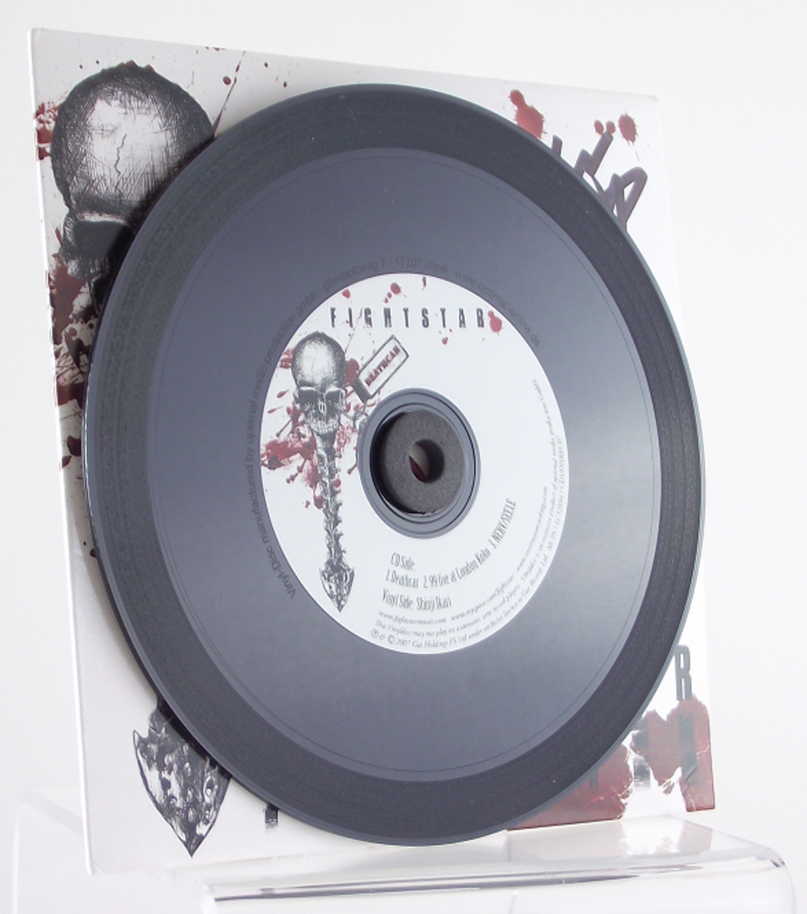

EL ROCK SIGUE GIRANDO
Desde clásicos eternos hasta joyas ocultas. Explorá la cultura del vinilo en Córdoba.
Mira nuestro ranking de los mejores discos de rock nacional en vinilo
Lo más escuchado
Rock nacional • Indie • Clásicos • Nuevas ediciones
Ver playlists